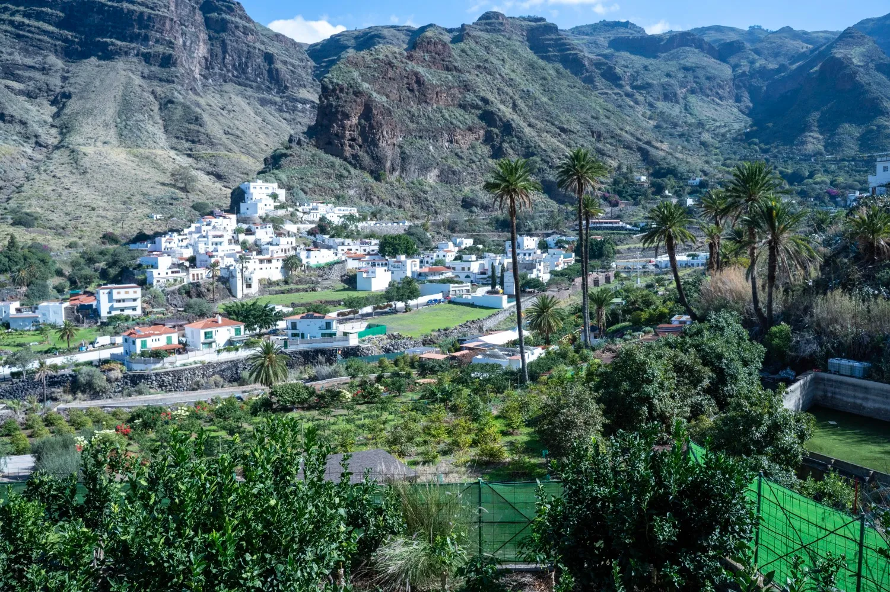
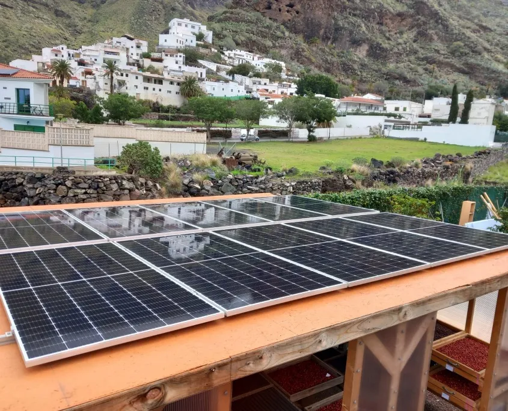
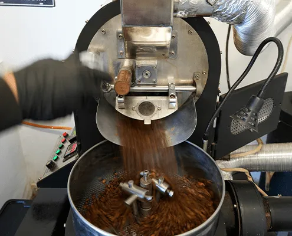
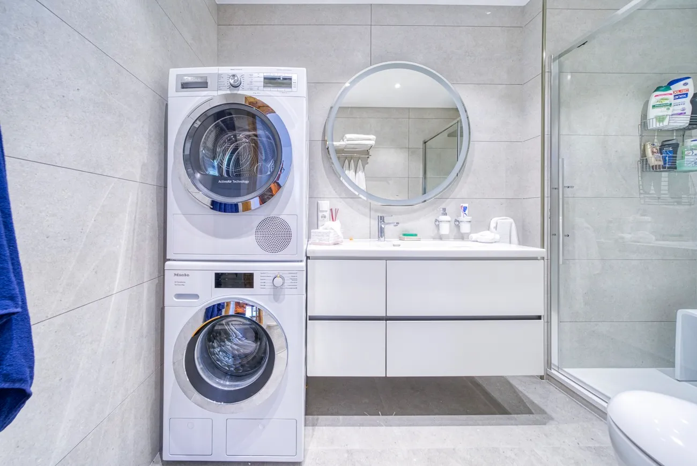
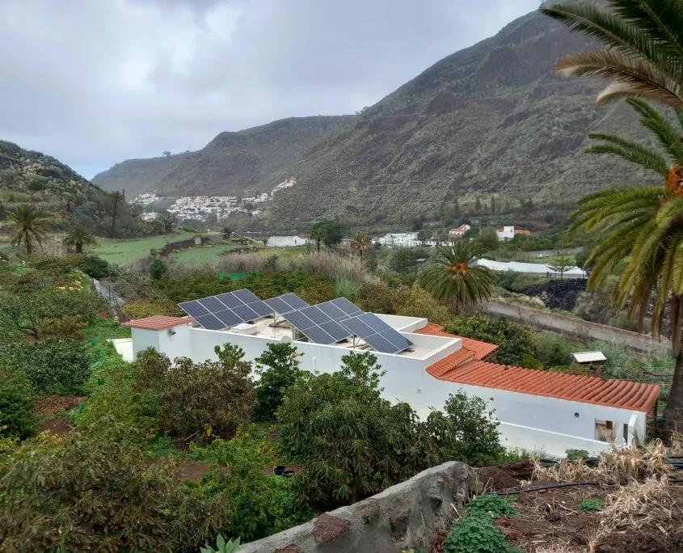

Valle de Agaete · Gran Canaria
Café europeo nacido entre volcanes
Finca Los Castaños: la única plantación cafetera de Europa. Tours guiados, alojamientos en plena naturaleza y eventos rodeados de montañas.
4,7 · 384 reseñas
2 ha Plantación de café
100% Energía solar
Descubre
Café Arabica Typica
Valle de Agaete
Tours guiados
Alojamiento en la finca
Eventos privados
Sostenibilidad solar
Arabica Geisha
Café de Europa
Capítulo 01
La semilla
Todo comienza con una pequeña semilla de Arabica Typica, sembrada a mano en suelo volcánico a la sombra de las montañas del Valle de Agaete.
Sigue bajando
Nuestra historia
Un valle que cultiva café desde el siglo XIX
Finca Los Castaños se asienta en el Valle de Agaete, dónde las brisas del Atlántico, el suelo volcánico y un microclima único hicieron posible lo que ningun otro lugar de Europa pudo: cultivar café. En 2022, dos emprendedores la adquirieron para continuar esta tradición centenaria con practicas sostenibles y energía 100% solar.



0
Plantas de café
0
Hectareas
0
kg de café al año
0
Reseñas

Cada grano se recoge a mano, se seca al sol y se tuesta con paciencia: asi nace un café suave, aromático, con un toque de caramelo y sin apenas acidez
Café europeo · Valle de Agaete · Gran Canaria · Arabica Typica · Sostenibilidad · Café europeo · Valle de Agaete ·
Finca Los Castaños · Tours del café · Alojamiento · Eventos · Finca Los Castaños · Tours del café ·
Lo que dicen nuestros visitantes
4,7
384 reseñas en Google
